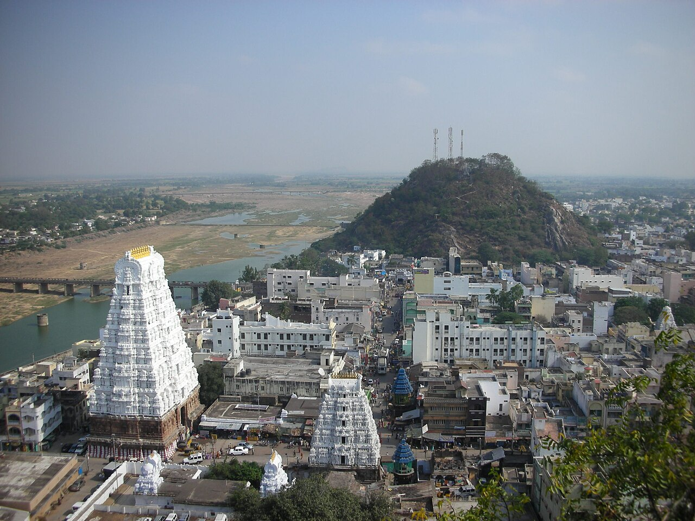

Wikimedia Commons · CC BY-SA 2.0 ⇗
Sthala Puranam
The town of Srikalahasti, east of Tirupati on the west bank of the Swarnamukhi river, is the air (Vayu) element of the Pancha Bhoota shrines; its Sthala Purana weaves a spider, a snake and an elephant into its very name.
Explanation
The name 'Kalahasti' springs from Ka (the spider), La (the snake-sarpam) and Hasti (the elephant) — three animals that, according to the legend, each worshipped a lingam with their own might in a great competition of devotion. The linga here is worshipped through the Vayu path, air reaching the pulpit of the sanctum and making a lamp flame flutter even in a closed shrine, testifying to the element. The temple's Vayu linga is kept cool, and the depiction of the wind-linga as one of the five sacred elements makes Srikalahasti a vital link in the Pancha Bhoota chain.
Why the temple is revered
Srikalahasti is revered as the air-sthal of the five, and its worship under the imperceptible element — air that none can grasp and all must breathe — makes its darshan a lesson in surrender. The spider-linga legend is among the most beloved animal-devotion stories of the South. It also guards the memory of the great mystic poet Vemana, whose simpler verses echo the same devotion.
🕉 Story
Srikalahasti is the Vayu sthal of the five Pancha Bhoota temples, where the deity is worshipped in the form of air. The ancient legend of the spider, snake and elephant is the source of the name Kalahasti.
✨ Significance
One of the Pancha Bhoota Shiva temples; also a renowned centre of Vemana and Vastu tradition.